5 Hyperlink pada gambar
5.1 Hyperlink manual
Anda dapat menjadikan gambar sebagai link ke halaman tertentu. Caranya mudah,
sama dengan pembuatan link objek lainnya, yaitu:
1. Klik kanan gambar tersebut, lalu klik tombol Hyperlink (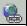 ). Muncul kotak
dialog Isert Hyperlink.
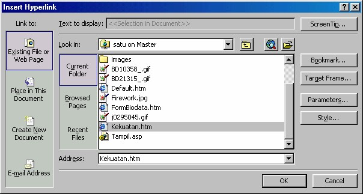
Gambar 7.35 Kotak dialog Isert Hyperlink
2. Carilah gambar/halaman tujuan, setelah ketemu klik nama file halaman
tersebut. Namanya akan muncul pada kotak Address.
3. Klik OK.
5.2 Membuat tombol dari gambar
Gambar bisa kita atur agar tampak seperti tombol, sehingga lebih komunikatif. Yang
kita butuhkan adalah tombol Bevel.
1. Klik gambar yang Anda inginkan. Toolbar Pictures muncul, jika tidak muncul
aktifkan View _ Toolbars _ Pictures.
2. Pada toolbar Pictures klik tombol Bevel ( ), efek tiga dimensi muncul di
sekeliling gambar sehingga menyerupai sebuah tombol.
3. Anda bisa mengulang klik beberapa kali untuk pilihan terang–gelap bevel.
Untuk kembali ke posisi tertentu, tekan CTRL + Z.
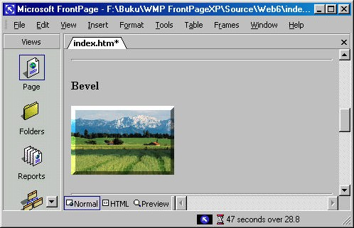
Gambar 7.36 Contoh gambar dengan bevel, sebagai tombol
4. Klik tombol Hyperlink (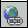 ). Muncul kotak dialog Isert Hyperlink.
5. Carilah tujuan link (misalnya halaman), setelah ketemu klik nama file halaman
tersebut. Namanya akan muncul pada kotak Address.
6. Klik OK.
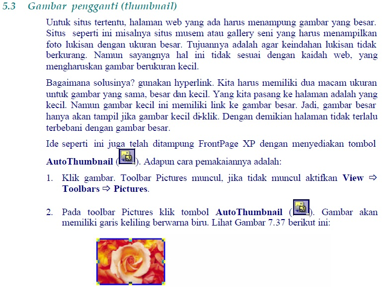
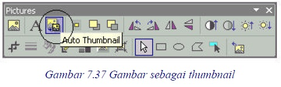
Kemudian Anda bisa membukanya pada browser. Kalau Anda klik gambar
thumbnail (Gambar 7.38 kiri) tersebut, browser akan menampilkan gambar dalam
ukuran aslinya yang jauh lebih besar dibanding thumbnail (Gambar 7.38 kanan).
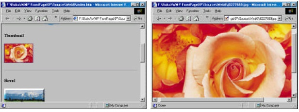
Gambar 7.38 Thumbnail dan gambar asli pada browser
Seperti pada ide dasarnya, FrontPage XP akan membuat gambar baru dalam ukuran
kecil. Anda bisa memeriksanya pada Folder List. Pada contoh ini nama gambar aslli
yang berukuran besar adalah j0227689.jpg,
Setelah Anda klik tombol Auto Thumbnail, maka terbentuk gambar baru untuk
thumbnail (berukuran kecil) bernama j0227689_small.jpg. Lihat gambar berikut ini:
Gambar 7.39
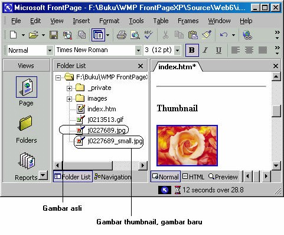
Gambar 7.39 Gambar baru lebih kecil ukurannya
Pada FrontPage XP kita bisa mengatur tampilan gambar thumbnail, yaitu dengan
mengaktifkan Tools _ Page Options , muncul kotak dialog Page Options seperti
Gambar 7.40.
Klik tab AutoThumbnail, dan klik salah satu jenis gambar autothumbnail dari tiga
pilihan yang disediakan, lalu klik OK.
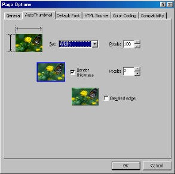
Gambar 7.40 Pilihan AutoThumbnail
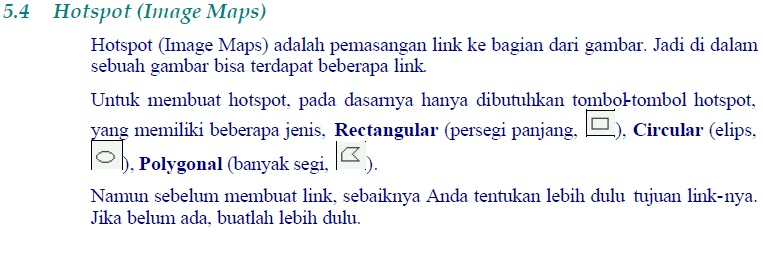
5.4.1 Membuat tujuan hyperlink
Buatlah tujuan link bisa berupa halaman atau bookmark. Misalnya bookmark,
berupa keterangan tentang penjualan semester pertama, kedua dan ketiga.
Langkahnya pembuatannya adalah:
1. Tuliskan sebuah teks judul, misalnya “Semester pertama”. Kalau perlu formatlah
teks tersebut.
2. Tekan ENTER, lalu tuliskan paragraf keterangan penjualan. Misalnya seperti
berikut:
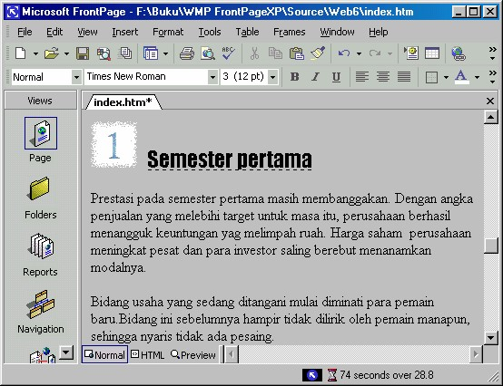
Gambar 7.41 Pembuatan bookmark sebagai tujuan link
3. Sorotlah teks judul (“Semester pertama”).
4. Aktifkan Insert _ Bookmark. Muncul kotak dialog Bookmark.
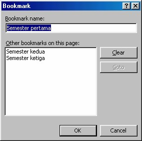
Gambar 7.42 Kotak dialog Bookmark
5. Pada kotak Bookmark name, tuliskan nama bookmark. Misalnya Semester
pertama.
6. Klik OK, kotak dialog Bookmark akan ditutup. Teks “Semester pertama” pada
halaman akan ditandai dengan garis bawah putus-putus.
7. Ulangi langkah 1 s/d 6 untuk bookmark “Semester kedua”.
8. Ulangi langkah 1 s/d 6 untuk bookmark “Semester ketiga”.
5.4.2 Membuat link bookmark
Setelah tujuan link siap, berikutnya kita bisa menggunakan tombol-tombol untuk
membuat hotspot. Yang kita pilih untuk kali ini adalah yang paling sederhana, yaitu
tombol Rectangular Hotspot (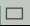 ).
Langkah selengkapnya adalah:
1. Pasangkan gambar, misalnya seperti Gambar 7.43.
2. Klik gambar untuk menampilkan toolbar Pictures.
3. Klik tombol Rectangular Hotspot ( ).
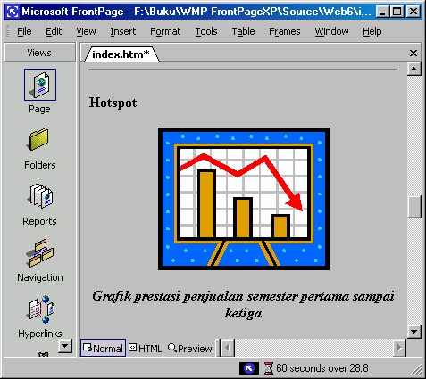
Gambar 7.43 Gambar yangakan dipasang hotspot
4. Klik dan drag bagian gambar, misalnya batang grafik pertama. Setelah bagian
tersebut terlingkupi, lepaskan drag. Muncul kotak dialog Insert Hyperlink.
5. Pada bidang kiri klik icon Place in This Document. Muncul daftar pilihan
bookmark.
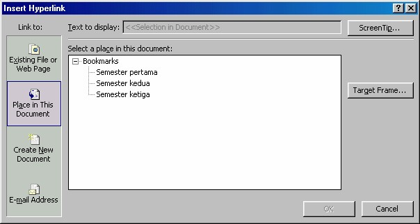
Gambar 7.44 Pilihan bookmark pada kotak dialog Insert Hyperlink
6. Klik salah satu nama bookmark. Untuk contoh ini, klik Semester pertama.
7. Klik tombol Screen Tips, muncul kotak dialog Set Hyperlink ScreenTip.
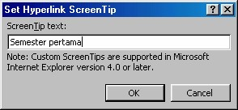
Gambar 7.45 Pengisian ScreenTip
Tuliskan keterangan singkat yang akan ditampilkan ke layar apabila pemakai
meletakkan pointer mouse pada bidang hotspot pertama ini, misalnya tuliskan
“Semester pertama”. Lalu klik OK, tampilan kembali ke kotak dialog Insert
Hyperlink. Klik OK.
8. Ulangi langkah 3 s/d 7 untuk membuat hotspot kedua.
9. Ulangi langkah 3 s/d 7 untuk membuat hotspot ketiga.
Setelah selesai, Anda bisa mencobanya di browser. Klik batang grafik pertama akan
menampilkan keterangan bookmark pertama. Batang kedua untuk keterangan
semester kedua dan batang ketiga untuk keterangan semester ketiga.
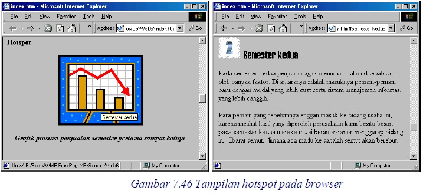
Copyright © Herlan Lesmana
Created with the Freeware Edition of HelpNDoc: Easy to use tool to create HTML Help files and Help web sites